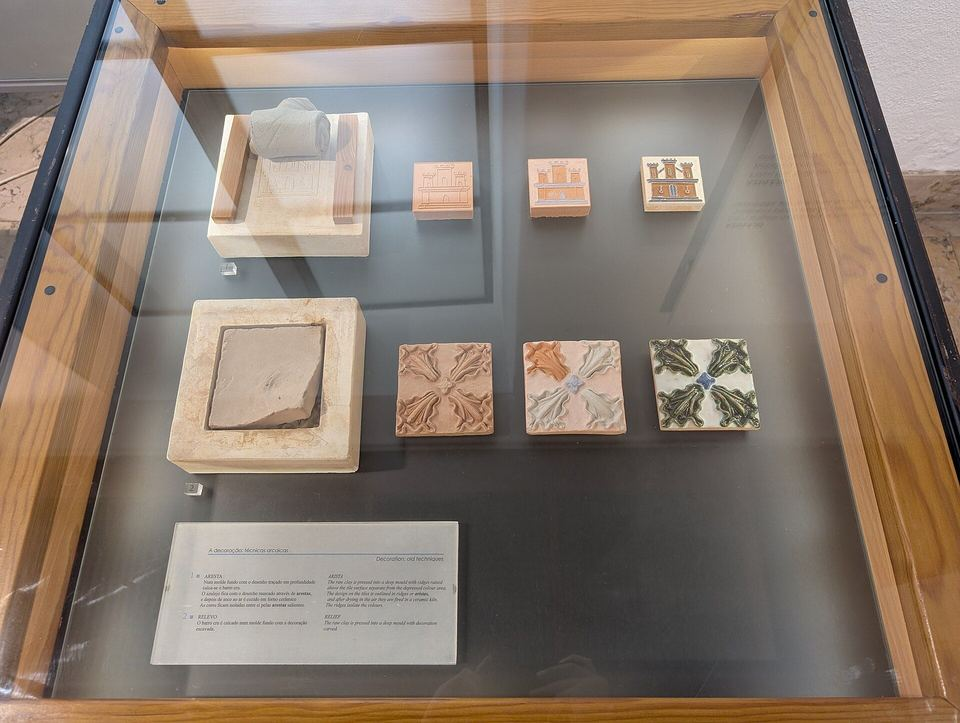
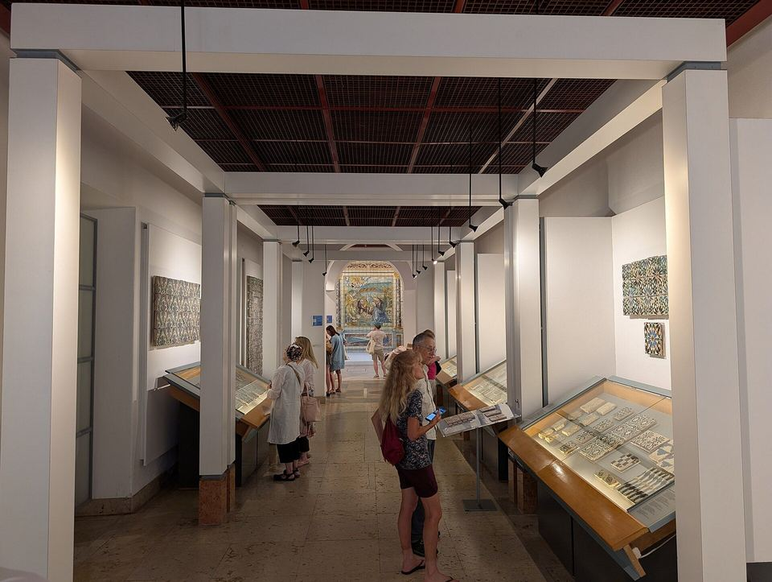
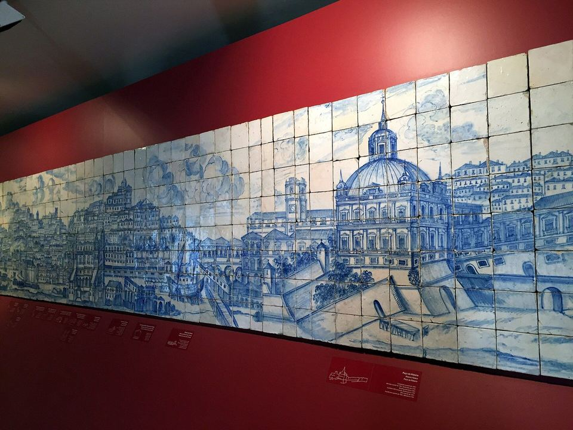

Cinco séculosnuma sócasa
Um convento de 1509 em Xabregas, Lisboa, guarda a maior coleção de azulejo português do mundo. Do século XV aos nossos dias.
Agora
Open AzulejoPalácio da Calheta · ter.–dom. 10h–17h
O azulejo vai ao AlgarveTavira · 70 peças
Oficina: explorar, desenhar e pintar19 nov. · 10h30
Oficina em família22 nov. · 10h30
Do Palácio ao Jardim Botânico29 nov. · percurso + oficina
Loja do Palácio FozRestauradores
O museu
Um convento fundado em 1509. Uma igreja coberta de ouro. Vinte e três metros de Lisboa antes do terramoto. Cinco séculos de azulejo, sala a sala, piso a piso. E, pela primeira vez, uma maqueta para nunca mais se perder lá dentro.
1509Fundação do Convento da Madre de Deus
1965Abre como museu autónomo
23 mGrande Vista de Lisboa, c. 1700
5Séculos de azulejo em exposição
Planta interativa · 3D
Entrar no
convento
Arraste para rodar a maqueta, use a roda ou dois dedos para aproximar. Escolha quanto tempo tem, ou um tema, e o caminho desenha-se pelos três pisos.
Maqueta esquemática para o protótipo. Os volumes e a posição das salas serão acertados com a planta real do convento.
A coleção
Do século XV
aos nossos dias
Peças em exposição e em viagem. Toque numa peça para a ver de perto.
Agenda
Enquanto o
museu se refaz
Durante as obras, o museu sai de casa: uma exposição no Palácio da Calheta, setenta peças em Tavira, oficinas de pintura e percursos pela cidade.
ExposiçãoEm curso
Open Azulejo
O Palácio da Calheta abre portas que costumam estar fechadas. Azulejos no lugar para onde foram feitos, ao lado de peças da coleção.
Palácio da Calheta · ter.–dom. · 10h–17h · desde 5 €
Comprar bilheteExposiçãoTavira
O azulejo vai ao Algarve
Cerca de 70 peças da coleção expostas em Tavira. Obras que normalmente estão na Madre de Deus, longe de Lisboa.
Tavira · datas a confirmar
19
nov.
nov.
Explorar, desenhar e pintar
Técnicas de pintura sobre vidrado. Leve para casa um azulejo pintado por si.
Adultos e jovens · 10h30
22
nov.
nov.
Pintar em família
Descobrir padrões nas paredes do palácio e desenhar um padrão próprio, em equipa.
Famílias · 10h30
29
nov.
nov.
Do Palácio ao Jardim Botânico
Um percurso de descoberta entre o palácio e o jardim, seguido de oficina de pintura.
Percurso + oficina · 10h30
10
dez.
dez.
Explorar, desenhar e pintar
Segunda sessão da oficina para adultos e jovens.
Adultos e jovens · 10h30
13
dez.
dez.
Pintar em família
Oficina de pintura de azulejo para pais e filhos.
Famílias · 10h30
27
dez.
dez.
A última oficina do ano
Entre o Natal e o Ano Novo, um azulejo para começar o ano.
Famílias · 10h30
Inscrições: geral@mnazulejo.pt · 218 100 340
Azulejo Aberto
O museu
continua lá fora
Palácios, mosteiros, metro e estações de comboio. Cada lugar liga-se às peças do museu. Clique num ponto, ou aproxime-se de Lisboa.
- Museu
- Exposição
- Lugar a visitar
- Estação de comboio
Proposta · estações-museu
De comboio pelo azulejo
As estações guardam alguns dos painéis mais vistos do país. Uma parceria com a Infraestruturas de Portugal faria de cada uma delas uma extensão do museu: um código em cada painel, roteiros por linha, e um mapa da rede ferroviária na Madre de Deus.
Proposta em estudo. Não publicar antes de haver acordo com a IP.
Histórias
Ler as
paredes
Para quem quer olhar com mais atenção.

Técnica · 6 min
Como se faz um azulejo
Barro, chacota, vidrado, pintura, forno. A pintura faz-se sobre o vidrado ainda cru, que absorve a tinta como papel mata-borrão. Não há borracha. Cobalto para o azul, antimónio para o amarelo. A cor não está à superfície: está dentro do vidro.
- Barro
- Chacota
- Vidrado
- Pintura
- Forno

Guia · 5 min
Como ler um painel
Comece pelos cantos: é aí que o pintor põe as figuras que levam o olhar até ao centro. Depois procure as juntas, e por fim o azulejo trocado ou rodado. Há um em quase todos os painéis.

Obra · 7 min
Lisboa antes do terramoto
Por volta de 1700, um painel de 23 metros pintou a frente ribeirinha vista do rio: o Paço da Ribeira, os cais, os conventos nas colinas. Meio século depois, o terramoto de 1755 apagou quase tudo. O azulejo ficou.
Visita e bilhetes
Planear
a visita
O edifício da Madre de Deus está fechado para obras. Até à reabertura, o museu recebe o público no Palácio da Calheta, em Belém.
Agora · Palácio da Calheta
Open Azulejo
- Dias
- ter.–dom.
- Horário
- 10h00–17h00
- Última entrada
- 16h30
Rua General João de Almeida · Belém. Elétrico 15E ou comboio de Cascais, estação de Belém.
Bilhetes
Preços
- Adulto
- 5,00 €
- Maiores de 65
- 4,00 €
- Com o Jardim Botânico
- 8,00 €
- Crianças 2–10 anos
- Grátis
Depois da reabertura · Madre de Deus
Xabregas
- Morada
- Rua da Madre de Deus, 4
- Autocarro
- 718, 742, 794
- Metro e comboio
- Santa Apolónia
Horário definitivo anunciado com a data de reabertura.